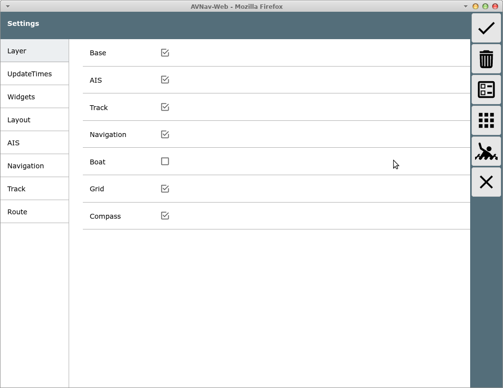

From the main page you get here using
the  button.
button.

Buttons
| Icon | Name | Function |
| SettingsOK | accept changes and go back | |
| SettingsDefaults | reset all settings to their default values | |
| SettingsLayout | start of the layout editor | |
| SettingsAddons | go to user app configuration | |
| SettingsSave (since 20220225) |
Save the current settings to the server | |
| SettingsLoad (since 20220225) |
load a settings file from the server (you will be able to select from a list) | |
| MOB | man over board (see main page) | |
| Cancel | discard changes and go back |
You can set many parameters affecting your display. All those settings are stored in the current browser (associated with the URL you used to open AvNav). They are not stored on the server!
For most values there is a separate reset button. Globally you can reset
to defaults using the  button. A confirmation dialog is displayed
when leaving the page without saving.
button. A confirmation dialog is displayed
when leaving the page without saving.
Most of the settings should be self explanatory. Some more sophisticated ones are described below.
| Category | Value | Description | Default |
| Buttons | auto hide buttons on NavPage | Hide the buttons on the navigation page after a timeout (can be
configured). Clicking on the right border will bring the buttons back. |
off |
| Buttons | auto hide buttons on Dashboard Pages | Hide the buttons on the navigation page after a timeout (can be
configured). Clicking on the right border will bring the buttons back. |
off |
| Buttons | time(s) to hide buttons on enabled pages | Time (in seconds) until the buttons are hidden on the pages where this is configured. | 30 |
| Buttons | show shade when buttons hidden | Show a shadow area on the right side when the buttons are invisible. You need to click on this are to bring the buttons back. | on |
| Layout | red icons in title | show small red icons in the page upper right corner for anchor watch and disconnected mode | on |
| Layout | title icons on dashboard page | also show the red icons for anchor watch and disconnected on dashboard pages | on |
| Layout | start with last split mode | if enabled the WebApp will start in the same mode (split/unsplit) like it was left (since 20240616) | off |
| Navigation | boat direction | Define which NMEA value will be used to draw the boat symbol
orientation.: COG, HDT, HDM. If you configure HDT or HDM and this
value is not being received it will fall back to COG.
The course vector will be determined by COG in any case. Since 20220421: If HDT or HDM are used a boat symbol will be drawn instead of the default arrow being used for COG. Can be customized by user icons . |
COG |
| Navigation | add dashed vector for hdt/hdm | Show an additional dashed course vector if you configured HDM or HDT for the boat orientation. | on |
| Navigation | Rotation Tolerance | If you configured "course up" for the map display it will not be rotated immediately for course changes below this value. This will make the map display more readable. | 15 |
| Navigation | zero SOG detect (20220421) |
If the boat is rotated based on COG and there is no movement any more (SOG below limit) switch of course vectors and map rotation. Show a circle for the boat. | |
| Navigation | zero SOG detect below (20220421) |
Limit for the SOG (in kn) for the zero SOG detect feature. | |
| AIS | Class B rel size | class B AIS targets can be shown at reduced (increased) size | 0.6 |
| AIS | reduce details in AIS list | in the AIS list you can reduce the amount of information that is shown for every target. This can be helpful if you have a laggy display on slow devices. | off |
| AIS | First AIS label Second AIS label Third AIS label |
select which information should be shown near the AIS target on the map | first: name/mmsi |
| AIS | only show moving AIS targets | if selected - do not show AIS targest that do not move | off |
| AIS | min speed (kn) for AIS target display | only if "only show moving AIS targets" - the maximum speed of an AIS target to be considered "not moving" | 0.5kn |
| Map | start with last map | if activated the WebApp will directly open the navigation page with the last used map on start up (since 20240616). | off |
| Map | automatic zoom | If you have locked the map to the boat position the zoom level will be automatically adapted to the available tiles in the area of the current display. So if you e.g. move from an area with higher zoom levels available (like a port) to an area where only lower zoom levels ara available the map display will zoom out automatically (not for o-charts). | on |
| Map | float map behind buttons | If you activate this setting the buttons and widgets will "float" on top of the map without a fixed background. | off |
| Map | Increase Fonts on High Res | Increase the symbol sizes and text fonts on high resolution displays. | on |
| Map | scale the map display | Some raster charts have a display with very small fonts and symbol sizes. This sometimes is hardly readable. With this setting you can scale up (or down) the display of the chart tiles to adapt to your personal preferences. | 1 |
| Map | zoom up lower layers | If there is no tile for the selected zoom level available just try to load tiles from lower levels and scale them up. As this requires addtional communication with the server it could impact the performance. The value defines how many lower levels will be tried to find a tile. | 4 |
| Map | zoom up lower layers for online sources | The same behavior like "zoom up lower layers" for charts that are directly loaded from the net (also for o-charts). Typically it does not make a lot of sense for such charts - so the default is off(0). | 0 |
| Map | Click Tolerance | The "catching area" in pixels for the click on chart objects. A large area would potentially select the wron object, smaller areas could make touch actions difficult. | 60 |
| Map | lock boat mode | you can modufy the behavior of the lock button center: center of the screen current: current position of the boat on the screen ask: show a select dialog every time |
center |
| Route | Approach | Destination to waypoint (in meters) for potential switching to
next waypoint if: - the distance to the current target waypoint increases and - the distance to the next waypoint decreases |
|
| Remote | ... | See the description |